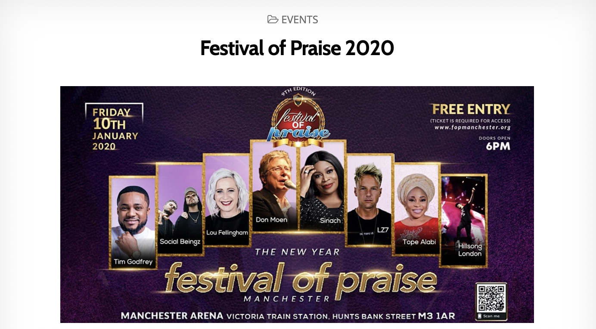

How it started
I started my musical journey with brass instruments like the tenor horn and tuba, and I actually went to concerts to play and from there I actually formed a passion for other instruments so after I started learning the keyboard at chorlton high school at a music summer school.
Concerts

When I was 14 I played for festival of praise Click here. This is a yearly program and I played for this concert .